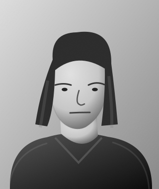
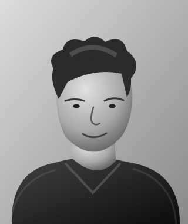

MANIFOLD GRACE · PEOPLE
Volunteer Team
A thoughtful, capable and collaborative culture built on initiative, trust and meaningful progress.




Concept portraits and example roles; volunteer participation is not yet confirmed.
Our Work Culture
Wellbeing first
A supportive place to do meaningful work.
Flexibility & autonomy
Trust, independence and responsibility.
Ideas welcome
Room for initiative and fresh thinking.
Inclusive & collaborative
Different strengths and perspectives.
Progress together
Clear milestones and steady development.
Fair contribution
Respectful recognition and reward.